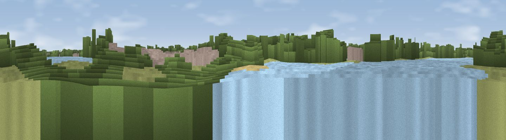

Viewpoint near Walthamstow
#44954 in England · top 62% of its area beats it · near Walthamstow · access?Where it is
The exact computed spot (TQ 35071 88296). Click the marker for map links.
Public access: no public right of way or access land is recorded at this exact spot — it may be on private land. Computed from Natural England's CRoW access layer and OpenStreetMap rights of way — not the legal definitive map. Always verify locally.
The view, rendered

A 360° render of this exact spot computed from the terrain model, tree cover and land cover — summer colours, afternoon light, calibrated against photographs of famous viewpoints. Real trees, hedges and buildings will differ in detail.
The panorama
Grey silhouette: terrain skyline in each direction (720 bearings, Earth curvature and refraction included). Dashed green: skyline with trees (+15 m) and buildings (+8 m) as obstacles. Blue strip: how far the ground is visible on each bearing.
Where the view opens
Wedge length = distance to the farthest visible ground on that bearing (vegetation-aware). Rings at 10, 25 and 50 km.
What fills the view
31% built-up · 30% woodland · 24% grassland · 14% water
Angular shares of the visible panorama (visual magnitude), not map area. Landscape diversity 0.59 (0–1 Shannon).
Key numbers
More beautiful places nearby
The staircase of upgrades: each row has a higher view potential than everything closer. Driving times are estimates from straight-line distance, calibrated against real road routing — check an actual route before setting out.
| Place | Direction | Drive | Score |
|---|---|---|---|
| Viewpoint near Wood Green | W · 4 km | ~9 min | 22.9 |
| Moon Hill | NE · 5 km | ~11 min | 30.6 |
| Viewpoint near Wood Green | WNW · 6 km | ~12 min | 35.9 |
| Viewpoint near East Finchley | W · 6 km | ~13 min | 38.5 |
| Viewpoint near Erith | ESE · 19 km | ~33 min | 38.9 |
| Harrow on the Hill | W · 20 km | ~33 min | 42.3 |
| Jury Hill | E · 27 km | ~43 min | 48.5 |
| Viewpoint near Horndon On The Hill | E · 32 km | ~50 min | 51.8 |
51.57735, -0.05215 · source: osm viewpoint · position refined by local search. Computed location — check access rights before visiting.